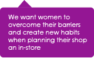
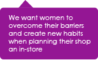
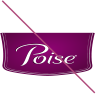
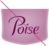
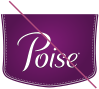
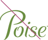
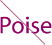
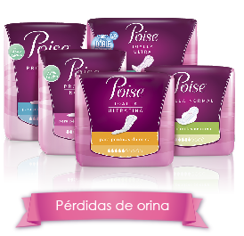

Fundamentales
Estrategia de Marca
Nuestro sueño:
Consolidar Poise en el mapa y llevarla al siguiente nivel.
Establecer POISE como la marca del BIENESTAR FEMENINO, que brinda soluciones a los síntomas de la menopausia
Nuestra estrategia
Acelerar la penetración de Poise, ganando en las categorías existentes, mientras se establecen las bases para los nuevos territorios.
Fundamentales
Perfil de la marca
40-65 años:
Beautiful optimistic y Proactive Normalizer
-

Objetivo estratégico
Mujeres con una actitud positiva que están experimentando cambios físicos y hormonales relacionados con la edad y son proactivas en el mantenimiento de la feminidad.
-
Promesa funcional
La prevención y el alivio de los síntomas
-
Promesa emocional
Inquebrantable confianza en sí misma
-
Promesa de la marca
Feminidad asegurada
Fundamentales
Posicionamiento local de la marca
-
Público Objetivo
Para las “Proactive Normalizers” y “Beautiful Optimistic”, mujeres con actitud positiva entre los 45 a 65 años que no quieren dejar que los cambios físicos y hormonales asociados con su etapa de vida comprometan su feminidad.
-
Necesidad Básica
Necesitan ayuda para manejar sus síntomas con soluciones no invasivas.
-
Marca
Poise es la única marca experta en pre y post menopausia
-
Marco de referencia
Va más allá de las actuales soluciones del mercado, como productos médicos o farmacéuticos, soluciones caseras, productos de cuidado femenino y otros sustitutos.
-
Punto de diferencia
Ofrece soluciones que previenen y alivian los síntomas asociados con su etapa de vida, con el fin de mantener su confianza y feminidad.
-
Soporte
Solo Poise ofrece una gama de productos de soluciones femeninas e intuitivas que están diseñadas naturalmente para su cuerpo.
Fundamentales
Historia de la marca
Tu aliada experta para disfrutar lo mejor de esta NUEVA ETAPA
Como mujeres, pasamos por muchas etapas de la vida con grandes cambios como: el síndrome pre-menstrual, la menstruación, el embarazo.
Alrededor de los 45 años entramos a una nueva etapa donde somos más experimentadas y disfrutamos de la vida de una manera distinta. También es una etapa donde nos toca afrontar nuevos cambios hormonales que ocurren durante el climaterio. Esos cambios nos hacen sentir física y emocionalmente diferente, donde además de ser más experimentada hay muchos momentos donde no sabemos cómo reaccionar. Es por eso que buscamos información para resolverlos.
Fundamentales
Historia de la marca
Queremos que las mujeres sepan que hay una marca que las apoya a comprender y manejar los cambios de esta etapa. Poise se ha especializado en las necesidades de las mujeres en el Climaterio,
Es la primera que entiende, cuida y habla sobre sus necesidades físicas y emocionales, para así poder disfrutar lo mejor de esta etapa de la vida.
Poise ofrece una amplia gama de productos femeninos que trabajan intuitiva y naturalmente para aliviar los síntomas asociados al climaterio; y por lo tanto para aliviar los calores repentinos, las perdidas involuntarias de orina, incomodidad en nuestra zona íntima y otros síntomas
Porque si comprendes los cambios que vendrán y cómo solucionarlos estarás preparada y podrás concentrarte en disfrutar lo mejor de cada día, siempre estando segura y femenina.
Poise, tu aliada experta en el Climaterio que te acompaña para disfrutar de esta nueva etapa.
Fundamentales
Perfil de la tarea

 



Fundamentales
Desafío de Marketing
¿Qué necesitamos hacer?
ILUMINAR Y GENERAR UN MOVIMIENTO
(alrededor de su estilo de vida, síntomas y categoría)
-
Consumidor / cliente / comprador
Educar a nuestros consumidores acerca de esta nueva etapa de la vida , sobre los síntomas que sienten y ofrecerles soluciones para incitarlos a la prueba. Al mismo tiempo, tenemos que fomentar el trade , demostrándoles la oportunidad de generar el aumento de las ventas en esta categoría y persuadirlos para incorporarlo en su canal.
-
Categoría, marca y producto
Como planificador en la categoría. Poise debe generar impacto y crear entusiasmo, educar a los consumidores sobre los síntomas y soluciones y normalizar la condición para los consumidores y para la sociedad.
-
¿Qué es el MOVIMIENTO?
En la primera etapa, el movimiento es una respuesta a esos cambios de la vida, educando a los consumidores y llevándolos nuevamente a una condición normal proporcionándoles soluciones. Más allá de esta experiencia, el movimiento les muestra cómo estar listo para el mundo, intercambiando experiencias con otros y generando un cambio en la sociedad.
Fundamentales
Directrices del Equity visual
Directrices de la marca
Reglas de logotipo
El logo Poise® existe en forma de letras únicamente cuando es usado como Marca. El logo con “Escudo” fue creado para empaques. Para lograr aplicaciones globales consistentes, el logotipo en forma de letras y el logo con escudo, no deben ser alterados.
Logo principal, recomendado para ser utilizado en todas las comunicaciones de marca.
Logo Secundaria, utilizado en la comunicación escrita, o cuando no se puede utilizar el logotipo principal
Fundamentales
Directrices del Equity visual
Directrices de la marca
Reglas de logotipo
- 
No estirar o distorsionar el logotipo
- 
Nunca cambie los colores

Nunca altere la forma Poise®
- 
Sólo se debe utilizar en los colores de la marca

No estirar o distorsionar el logotipo
- 
Nunca cambiar el color
- 
Nunca cambiar las formas de las letras

Nunca deconstruir el logotipo

Sólo se deben utilizar en los colores de la marca
Fundamentales
Directrices del Equity visual
Directrices de la marca
Reglas de logotipo
El color ayuda a definir la primera impresión visual de los consumidores de la marca.
Gama de colores de la marca es intuitivamente femenina y apropiada para la edad.
-
Degradé

C17 M100 Y7 K3
C25 M100 Y3 K57
-
Color
C21 M100 Y5 K30
Fundamentales
Directrices del Equity visual
Directrices de la marca
Activos de la marca: la tipografía
La tipografía juega un papel vital en el manejo de la marca. Se debe tener en cuenta que la tipografía desempeña un papel de apoyo en la entrega de una comunicación clara y sin quitarle protagonismo al logotipo.
La tipografía que se usa para el logo Poise no es una tipografía regular, esta fue creada para la marca.
Poise does not use the word typography, text is created.


Fundamentales
Directrices del Equity visual
Directrices de la marca
Activos de la marca - Patrones
El patrón de ondas proporciona un movimiento que fluye naturalmente y que tiene estilo y gracia ... al igual que nuestra Beautiful optimistic. El elemento visual se puede utilizar en cada punto de contacto para añadir profundidad y capas de color, la fotografía o la estética del producto.
-
Patrón de las ondas
Se puede utilizar para crear un contexto textual
-
Ondas sutiles
Puede ser sobrepuesto en la fotografía
Fundamentales
Directrices del Equity visual
El estilo de vida de la fotografía
- Estilos generales de la fotografía:
Fotografías a color
Se muestra en un medio ambiente (interior y exterior)
Captura un momento en el tiempo (editorial en estilo, no por etapas)
- Tipo de mujer:
"Las mujeres de verdad" no demasiado estilizadas
Todas las formas y tamaños
Edad de aspiración + 45 años
Etnia regionalmente relevante
- Papel de la mujer:
Ella puede estar en varios escenarios
Cuando está sola, ella puede mirar directamente a la cámara (comprometido con el lector) o mirar a sus alrededores (interactuando con su entorno)
En los entornos sociales con las diferentes personas en su vida
Haciendo una variedad de actividades para mostrar lo multifacética que es su vida (actividades no pueden ser demasiado agotadoras)
Las emociones siempre deben transmitir felicidad y confianza
Fundamentales
Directrices del Equity visual
Lo que no está permitido en el estilo de la fotografía
Fundamentales
Directrices del Equity visual
Directrices de la marca
Activos de marca: color de la plataforma
Cada plataforma se identifica por un código de color específico que es importante aplicar en cualquier comunicación de la marca.
Las ondas azules fueron añadidas a los productos para control de calores para diferenciarse de las otras categorías.
- 